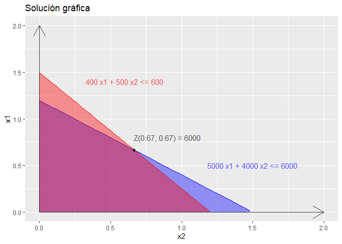

Consigna:
Tema: Programación Lineal
Ejercicio: Practico 3 - Ej 2.b) 2018
Suponga que acaba de heredar USD 6000 y que desea invertirlos. Se le presentan dos oportunidades de participación en negocios.
En ambos casos, la inversión significa dedicar un poco de tiempo el siguiente verano, al igual que invertir en efectivo.
En el primer negocio al convertirse en socio completo tendría que invertir USD 5000 y 400 horas, y su ganancia estimada (ignorando el valor del tiempo) sería USD 4500.
Las cifras correspondientes a la segunda proposición son USD 4000 y 500 horas, con ganancia estimada de USD 4500.
Sin embargo, en ambas propuestas podrían entrar con cualquier fracción de la sociedad; la participación en las utilidades sería proporcional a esa fracción.
Como de todas maneras Ud. está buscando un trabajo interesante para el verano (600 horas a lo sumo), ha decidido participar en una o ambas propuestas, con la combinación que maximice la ganancia total estimada.
Resolución:
Este es un problema de maximizacion, en el que se busca maximizar las ganacias en funcion de las fracciones que se invierten en cada sociedad/inverción .
Se tienen para invertir $6000 y 600Hs
Inverción en la sociedad 1: $5000 & 400Hs → Ganancia = $4500
Inverción en la sociedad 2: $4000 & 500Hs → Ganancia = $4500
Definicion de variables:
En funcion de los datos antes mecionados se pueden definir las variables x1 y x2 como:
- x1: fracción que se invierte en la sociedad 1
- x2: fracción que se invierte en la sociedad 2
Funcion Objetivo (a maximizar):
\[ \begin{align} Z &= A\ x1 + B\ x2 \end{align} \]
A: Ganancias de la inversion 1.
B: Ganancias de la inversion 2.Para este caso A = B = 4500. Entonces
\[ \begin{align} Z &= 4500\ x1 + 4500\ x2 \end{align} \]
Para resolver el problema en R se usará el paquete ‘lpSolve’ para resolución de problemas de programación lineal.
Para instalar el paquete descomentar la primer linea
# install.packages("lpSolve")
library(lpSolve)
# Coeficientes de la funcion objetivo
f.obj <- c(4500, 4500)
f.obj # Imprimimos los coef. de la función obj, para ver que estén bien inicializados## [1] 4500 4500Restricciones:
Las restricciones conforman un sistema de inecuaciones, en el que cada una representa una limitación en el espacio de soluciones acorde a las características del problema.
\[ \left\{ \begin{array}\\ 5000\ x1 + 4000\ x2 \le 6000 & \mbox{Inecuacion de la restriccion respecto al dinero invertido } \\ 400\ x1 + 500\ x2 \le 600 & \mbox{Inecuacion de la restriccion respecto a las horas invertidas} \\ x1,\ x2 \ge 0 & \mbox{Restriccion de no negatividad} \\ \end{array} \right. \]
Este sistema de inecuaciones también representa un modelo matemático formal representado por un sistema matricial. Este sistema tiene la forma \(Ax=b\) donde \(A\) es la matriz de coeficientes y \(b\) es la columna de términos constantes.
# Inicializamos la matriz de coeficientes de las restricciones por fila
# No se considera la restricción de no negatividad ya que es asumida automáticamente
f.con <- matrix(c(5000, 4000, 400, 500), nrow = 2, byrow = TRUE)
# Inicializamos los signos de las inecuaciones
f.dir <- c("<=","<=")
# Inicializamos la columna de términos constantes
f.rhs <- c(6000,600)Solución:
Una vez inicializado el sistema de inecuaciones se debe buscar el valor máximo del sistema, dadas las restricciones, para encontrar la solución final. Para esto se utiliza el comando lp que resuelve el problema en función a sus parámetros. Entre los mismos se encuentran las variables inicializadas anteriormente así como también un parámetro adicional para determinar si se trata de un problema de minimización o maxización.
# Valor final de Z
solution <- lp(direction = "max", objective.in = f.obj, const.mat = f.con, const.dir = f.dir, const.rhs = f.rhs)
max_value <- solution$objval
point <- solution$solution
print(paste(
"Las ganancias maximas son iguales a $",
max_value,
" y se obtinen en el punto (x1,x2) = ",
format(round(point[1],2), nsmall = 2),
",",
format(round(point[2],2), nsmall = 2)
))## [1] "Las ganancias maximas son iguales a $ 6000 y se obtinen en el punto (x1,x2) = 0.67 , 0.67"Solución gráfica:
En este apartado se utilizara el paquete ggplot2 para mostrar la resolución mediante un método gráfico.
Para esto realizaremos un gráfico que representa el espacio de soluciones acotado según las restricciones del problema. Este es un gráfico de dos variables en el que cada eje representan los valores de \(x1\) y \(x2\).
Para instalar el paquete descomentar la primer linea
# install.packages("ggplot2")
library(ggplot2)
options(warn = -1)
fun.1 <- function(x) -0.8 * x + 1.2
fun.2 <- function(x) -1.25 * x + 1.5
ggplot(data.frame(x=c(0,2)), aes(x)) +
stat_function(fun=fun.1, geom="area",fill="blue",alpha=0.4) +
stat_function(fun=fun.1, geom="line",col="blue",alpha=1) +
geom_text(aes(x=1.5,y=0.5,label="5000 x1 + 4000 x2 <= 6000"), col="blue", alpha=0.4) +
stat_function(fun=fun.2, geom="area",fill="red",alpha=0.4) +
stat_function(fun=fun.2, geom="line",col="red",alpha=1) +
geom_text(aes(x=0.6,y=1.4,label="400 x1 + 500 x2 <= 600"), col="red", alpha=0.4) +
geom_point(aes(x=point[1], y=point[2]), colour="black")+
geom_text(aes(x=0.9,y=0.8,label="Z(0.67, 0.67) = 6000"), col="black", alpha=0.4) +
geom_segment(mapping=aes(x=0,y=0,xend=2, yend=0), arrow=arrow(), size=0.5, alpha=0.5) +
geom_segment(mapping=aes(x=0,y=0,xend=0, yend=2), arrow=arrow(), size=0.5, alpha=0.5) +
ylab("x1") + xlab ("x2") +
ggtitle("Solución gráfica") +
ylim(0,2)